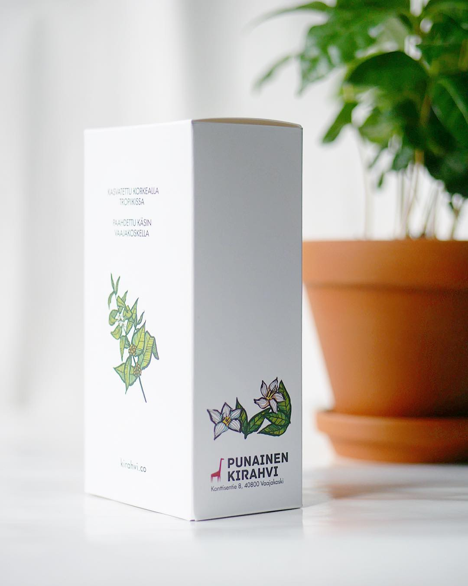

Hello
Welcome to my homepage
Two
Projects

projekti
ProjetkiTwo
Three
Four
oikea marginaali
_left (width: 45% ja taustaväri:#F7F5EE, reunus yhtenäinen 1px väri:#AC9675, säädä marginaalit suhteellisesti esim. 20px/16px=??em) ja #content_right (muuten samat, mutta oikean marginaalin leveys suhteellinen määritys esim. em -määrityksellä oikeasta laidasta(esim. 20px/16 px= ??) ja tarvinnet myös overflow -määritystä hidden. Lisää tunnisteet (#content, #content_left ja #content_right) koodiin div:einä ja kokeile toimintaa syöttämällä tekstiä kumpaankiin osioon, kappaleen vaihdolla saat asettumaan nätisti sivulle:=). Korjaa palstojen leveyttä pienentämällä molempien leveyttä, etsi sopiva suhteellinen %-arvo. Korjaa vasen jaoikea marginaali
ympärille suhtee palstojensta-elementin kautta: Kopioi CSS-määritykset fully styled horizontal navigation bar example:sta omaan tiedostoosi ja muokkaa li-elementti inline-määritykseksi ja ul-elementtiin sisällön keskitys. Muuta taustavärit linkeissä värimaailmaan sopivaksi. Tee koodiin vastaavat kutsut (ul ja li -elementeillä), säädä linkkien väliä esim. välistyksellä. Tallenna ja testaa.oikea marginaali
tässä tekstiä testiksi